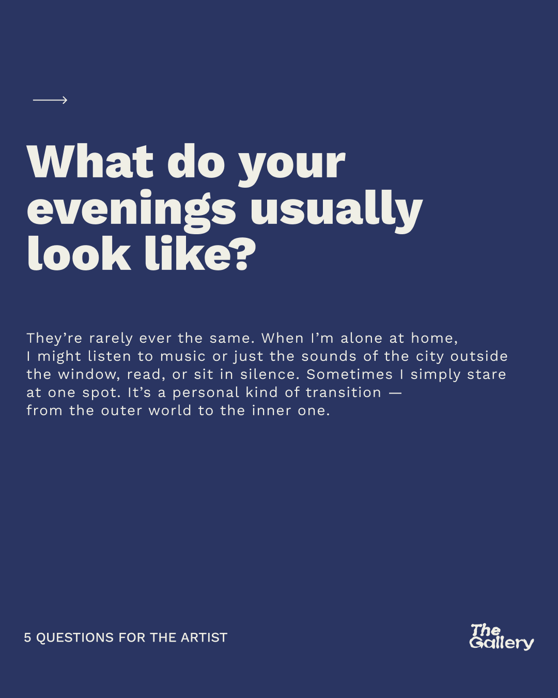

Event posters and a recurring editorial system for an independent contemporary art space in Tbilisi.
The idea
Every show speaks in its own voice, held together by one attitude — not one template.
The Gallery wanted each event to have its own visual character. Youthful, direct, a bit irreverent. The challenge wasn't consistency in style but consistency in attitude: every poster should feel like it belongs to the same space even when it looks completely different from the last one.
Nine posters for an independent art space in Tbilisi, each for a different kind of event, plus two recurring editorial formats for social media: a structured interview series and an artist spotlight. The interesting constraint was making it all feel like one identity without forcing anything into a template.
Posters
Nine events, nine voices — one identity.
Interview series
5 Questions for the Artist.
A recurring interview format built around five questions per artist. Each series opens with a cover card, the artist's portrait with their name as the dominant element, and continues with question and answer cards interspersed with artwork photography.
Two colour registers keep the format recognisable: charcoal for Polina Orlova, navy for Tasia K.
Polina Orlova
Tasia K

Artist spotlight
What's Your Inspiration.
A lighter series focused on individual artists connected to the gallery. Each post gets a distinct colour accent applied to the artist's name, set in a custom display treatment.
The palette shifts per subject, pink for Nino Gogolidze, purple for Mako Lomadze, while the layout logic stays constant across the series.